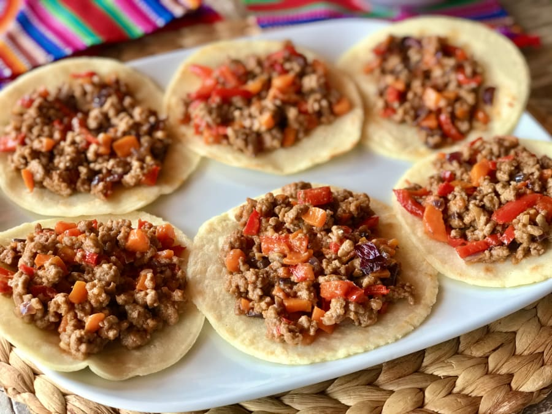
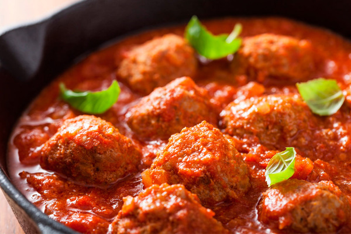

Recetas a base de Carne
En esta seccion encontraras deliciosas recetas a base de carne para todos los gustos desde comidas rapidas hasta lentas pero sabrosas.

Tacos de carne molida
En una sartén grande, cocina la cebolla y el ajo hasta que estén dorados. Agrega la carne molida y cocina hasta que esté dorada y bien cocida. Añade el pimiento, los tomates en cubitos, el comino, el chile en polvo, la sal y la pimienta. Cocina a fuego medio durante unos 10-15 minutos. Calienta las tortillas y rellénalas con la mezcla de carne. Sirve con tus ingredientes adicionales favoritos
- 500g de carne molida
- 1 cebolla picada
- 2 dientes de ajo picados
- 1 pimiento picado
- 1 lata de tomates en cubitos
- 1 cucharada de comino molido
- 1 cucharada de chile en polvo
- Sal y pimienta al gusto
- Tortillas de maíz
- lechuga, tomate, queso rallado, salsa picante, aguacate
Albóndigas de carne en salsa de tomate
En un bol grande, mezcla la carne molida, el huevo, el pan rallado, la cebolla picada, el ajo picado, la sal, la pimienta y las hierbas. Forma albóndigas del tamaño deseado y dóralas en una sartén con un poco de aceite. En otra sartén, cocina la pasta de tomate por unos minutos, luego agrega el tomate triturado, sal, pimienta y hierbas al gusto. Cocina a fuego lento durante 10-15 minutos. Añade las albóndigas a la salsa de tomate y cocina a fuego lento durante otros 10 minutos o hasta que estén cocidas por completo.
- 500g de carne molida
- 1 huevo
- 1/4 taza de pan rallado
- 1 cebolla picada
- 2 dientes de ajo picados
- 1 lata de tomate triturado
- 1 cucharada de pasta de tomate
- Sal, pimienta y hierbas al gusto
Chili con carne
En una olla grande, cocina la cebolla y el ajo hasta que estén dorados. Agrega la carne molida y cocina hasta que esté dorada. Añade el pimiento, los tomates en cubitos, los frijoles rojos escurridos, el chile en polvo, el comino, la sal y la pimienta. Cocina a fuego medio durante unos 20-25 minutos. Sirve caliente y acompaña con arroz, tortillas de maíz o nachos. Puedes agregar toppings como queso rallado, crema agria, aguacate o cilantro fresco.
- 500g de carne molida
- 1 cebolla picada
- 2 dientes de ajo picados
- 1 lata de tomates en cubitos
- 1 lata de frijoles rojos
- 1 pimiento picado
- 2 cucharadas de chile en polvo
- 1 cucharada de comino molido
- Sal y pimienta al gusto
Lomo saltado

En un tazón, mezcla la carne de res con la salsa de soja, el vinagre de vino tinto, el ajo picado, la sal y la pimienta. Deja marinar durante al menos 15-20 minutos. Calienta una sartén grande o un wok a fuego alto y agrega una cucharada de aceite vegetal. Agrega la carne marinada y cocina rápidamente hasta que esté dorada por fuera pero aún jugosa por dentro. Retira la carne de la sartén y reserva. En la misma sartén, agrega la cucharada de aceite restante y saltea las cebollas, los tomates y el pimiento amarillo hasta que estén tiernos pero aún crujientes. Agrega la carne de res reservada a las verduras salteadas y mezcla bien. Añade la salsa de ají amarillo (si estás usando) y cocina por un par de minutos más. Rectifica el sazón con sal y pimienta según sea necesario. Sirve caliente el lomo saltado sobre una cama de arroz blanco cocido y espolvorea con perejil fresco picado para decorar, si lo deseas. Disfruta este plato peruano clásico y sabroso.
- 500g de carne de res
- 2 cebollas rojas, cortadas en juliana
- 2 tomates medianos, cortados en tiras
- 1 pimiento amarillo, cortado en tiras
- 2 dientes de ajo, picados
- 2 cucharadas de salsa de soja
- 2 cucharadas de vinagre de vino tinto
- 2 cucharadas de aceite vegetal
- Sal y pimienta al gusto
- Perejil fresco picado
- Arroz blanco cocido, para acompañar